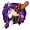
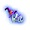
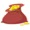
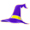
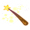

5-reel 25-line slots
The objective of Fortune Hill is to obtain winning symbol combinations by spinning the reels.
To play the game:
- Check the box to the left of Don’t Show Again if you want this screen to be skipped the next time the game is loaded. In case you do want to see it the next time you start playing Fortune Hill, click Close. In both cases you will be directed to the main game reels.
- Line bets are chosen by clicking + and – below Line Bet to increase or decrease the amount.
- Paylines can be activated and their shape displayed by progressively clicking + and – below Lines. Paylines can also be activated by using the numbered buttons on either side of the reels. Selecting a high payline includes all the lower ones too. For example, selecting payline 6 also activates paylines 1 through 5. Clicking Bet Max activates all paylines with the currently selected bet per line and spins the reels.
- Total bet per game round = line bet X active paylines.
- Clicking Spin spins the reels with the current selection of lines and line bets. During the reel spins the Spin button changes intoStop. Clicking Stop ends the spin animation and immediately displays the spin result.
- Reels can also be spun using the Auto Play function. Mouse over the Auto Play button to display the list of options. Select the number of spins to be played automatically or choose Until Feature to spin until the Magic Mushrooms Bonus or the Rainbow Free Games round is triggered. Clicking on an option starts the Auto Play function. The Auto Play button changes into Stopduring the Auto Play mode. The Auto Play mode ends when the reels have been spun the number of times determined by the player, or when the Magic Mushrooms Bonus or the Rainbow Free Games round is triggered if you chose Until Feature, or when you click Stop.
- Clicking the Turbo Mode button switches on or off the Turbo Mode thus turning on or off some of the win animations and sounds, and making the reels spin faster or slower.
- Wins are calculated according to the paytable. Line win = line bet X corresponding multiplier according to the paytable. The paytable can be accessed via the Info page.
- On a given payline, only the highest payline winning combination pays while simultaneous winnings on different paylines are accumulated.
- In the case of a winning spin, the Win field displays the accumulating winnings. The Win ticker can be stopped by clicking anywhere on the screen to display the total win amount immediately.
- Payline wins and the total win are also displayed on the strip located at the bottom of the reels or the game window.
Info page:
- Clicking Info opens the reference screen describing different game components. Clicking the arrow buttons at the lower right-hand corner of the screen enables navigating between the different info screens.
- The Paytable screen shows all winning combinations. When opened after a winning spin, the winning symbol combinations (number of symbols and bet multiplier) are highlighted and blink.
- The Fortune Wheel screen describes the symbols on the Fortune Wheel and explains the features, which each of them stands for.
- The Money Bag Feature and the Magnificent Multipliers screen explains how the features are triggered and what their rewards are.
- The Wondrous Wizard Re-Spin screen explains how the feature is triggered and what its rules are.
- The Fairy Feature screen explains how the feature is triggered and what its rewards are.
- The Magic Mushrooms Bonus screen explains the symbol combination that triggers the Bonus round and how it is played.
- The Rainbow Free Games screen describes the symbol combination that triggers the Free Games round and what the Rainbow Free Games rules are.
- The Paylines screen illustrates all possible payline combinations and explains the payout rules in the game.
- Clicking Back exits the Info screen and returns to the game.
Paylines:
- Active paylines are represented by lines that appear over the reels as illustrated in the Paylines screen of the Info page.
- Only active paylines can register wins.
- There is a difference between the line bet and the total bet. The line bet shows how much is being bet on a single payline. The total bet shows how much is being bet in total on the game round. Payouts shown in the paytable are multiplied by the line bet.
About payouts:
- Payouts are listed on the Paytable screen. To find the possible win amount, the line bet must be multiplied by the payout.
- If two payline winning combinations occur on the same line, the higher of them is paid out. If more than one active payline has a winning combination, the winnings are accumulated.
- Winning combinations must start from the left most reel, and the symbols have to be consecutive.
Fortune Wheel
To the right of the reels you can see the Fortune Wheel, which is available during both main game and the Rainbow Free Games.
During main game several positions on the Wheel are covered with special symbols. Each symbol stands for a different feature: Money Bag Feature, Magnificent Multipliers, Wondrous Wizard Re-Spin, or the Fairy Feature. For more information about each feature the Fortune Wheel can award, click on its name above.
During the Rainbow Free Games the Fortune Wheel will only award additional Free Games. More information about the Free Games round can be found here.
The Fortune Wheel will turn together with the reels during each main game spin or Rainbow Free Games spin. Its features, however, are triggered when the Fortune Wheel needle points to the respective symbol that awards it. If after a spin the needle points to a blank position on the wheel, then no feature is won.
Wild Symbol
The Wild symbol  can stand for any other symbol, except and , to make the best possible winning combination and appears during main game, the Wondrous Wizard Re-Spin Feature and the Rainbow Free Games round.
There is also a separate payout for 2 or more on an active payline, as seen in the Paytable. This is paid out instead of the regular symbol win if the win amount from Wilds is larger than the win from the regular symbols (by Wild standing in).
Note: there is a special Freezing Wild symbol  that appears during the Wondrous Wizard Re-Spin. More information about this feature can be found here.
Bonus Symbol
The Bonus symbol appears on reels #1 and #5 during main game only. Whenever appears in any position on reels #1 and #5 simultaneously, the Magic Mushrooms Bonus round is triggered as explained here.
Free Games Symbol
The Free Games symbol appears on reels #1, #3 and #5 during main game only. Whenever 3x appear in any position on reels #1, #3 and #5 simultaneously, the Rainbow Free Games round is triggered. More information about this feature can be foundhere.
The Money Bag Feature is triggered whenever the needle of the Fortune Wheel points to  at the end of the current spin. Then you are awarded a random cash prize of x2, x3, x5, or x6 the total bet. First the Money Bag Feature will be played and its prize awarded, then your winnings from the current spin will be added to them. If the current spin has awarded no wins, you will still get a cash prize reward during the Money Bag Feature.
Note: the Money Bag Feature is available during main game only. If it has been awarded by the spin that won either the Magic Mushrooms Bonus or the Rainbow Free Games round, the Money Bag feature will be triggered and its cash prize awarded before the Bonus or Free Games round starts.
Whenever the needle of the Fortune Wheel points to , , or , your current win from the same spin, if any, will be multiplied by the Magnificent Multiplier that appeared on the Wheel. First your winnings from the current spin will be calculated and then the multiplier awarded by the Magnificent Multipliers Feature will be applied to them. If no win has been awarded during that spin and you have been awarded the Magnificent Multipliers Feature, then no prize will be won.
Note: the Magnificent Multipliers Feature is available during main game only. However, if it was awarded by the spin that won either the Magic Mushrooms Bonus or the Rainbow Free Games, the multiplier will apply to the Bonus or Free Games wins, as well to the wins from the triggering spin (if any) and the cash prize from the Bonus or Free Games rounds, together with the ones from the triggering spin (if any), will be multiplied and calculated after the Bonus or Free Games round has ended.
When the Fortune Wheel needle points to , you win 3 Wondrous Wizard Re-Spins with 3 random Freezing Wilds as follows:
- During the 1st re-spin a is added to a random position on reel #1
- During the 2nd re-spin another is added to a random position on reel #3
- During the 3rd re-spin another is added to a random position on reel #5
All positions covered with , will remain “frozen” until the 3rd and last re-spin ends.
The Wondrous Wizard Re-Spin Feature will start only after the winnings from the spin that won it, if any, have been calculated and added to your winnings. After each re-spin your winnings (if any) will be calculated and added to your balance.
Click Continue to return to the main game reels.
Note: the Wondrous Wizard Re-Spin Feature is available during main game only. If it has been awarded by the spin that won either the Magic Mushrooms Bonus or the Rainbow Free Games round, the Wondrous Wizard Re-Spin Feature will be triggered and its prizes awarded after the Bonus or Free Games round has ended and you have returned to the main game reels.
Whenever the Fortune Wheel needle points to  either the Fairy Cash Prize or the Fairy Expanding Wilds Feature will be randomly triggered.
When the Fairy Cash Prize Feature has been triggered the total bet from the current spin that has won the Fairy Feature will be randomly multiplied x6, x8, x10, or x15. This means that even though the current spin may have awarded no wins, you will still get a cash prize reward during the Fairy Cash Prize Feature.
When the Fairy Expanding Wilds Feature has been triggered all symbols on reels #2 and #4 from the current spin that has won the feature will be covered by Expanding Wilds. All positions on both reels will act as Wild. Wins will be calculated for the current spin and only once for the resulting combinations after the Expanding Wilds have been added to the reels.
Note: the Fairy Cash Prize Feature and the Fairy Expanding Wilds Feature are available during main game only. If either has been awarded by the spin that won the Magic Mushrooms Bonus or the Rainbow Free Games round, the Fairy Cash Prize or Expanding Wilds Feature will be triggered and its cash prizes awarded before the Bonus or Free Games round starts.
Whenever appears anywhere on reel#1 and #5 simultaneously, the Magic Mushrooms Bonus is triggered.
To start the Bonus round, click on Click to Start.
On the screen that follows you see 12 mushrooms. Each of them stands for a cash prize reward. Click on a mushroom to select it and reveal the cash prize. In addition to the cash prize it awards, and only after the 6th pick is made, a mushroom can also terminate the bonus. If a mushroom terminates the bonus, a prize is awarded and then the bonus round ends.
At the end of the Bonus game, a win screen displays your winnings. Game win shows the winnings that were received from the main game that won the Bonus. Feature win shows the winnings that were received during the Bonus. Total Win shows the accumulated winnings (Game Win and Feature Win added up).
Click Continue to return to the main game.
Note: The Magic Mushrooms Bonus can be triggered during main game only. The Magic Mushrooms Bonus and the Rainbow Free Games cannot be won simultaneously during one and the same spin.
The Rainbow Free Games round is triggered if 3 appear in any position on reels #1, #3 and #5 simultaneously during main game.
To start the Free Games round, click on Click to Start.
You are initially awarded 8 Free Games. More Free Games can be additionally awarded by the Fortune Wheel. Whenever its needle points to a field with a number on it, the same number of Free Games is added to the remaining ones, if any. Thus you can win up to +8 Free Games in a single spin and win Free Games infinitely.
Note: the Rainbow Free Games round can be triggered during main game only. The Rainbow Free Games and the Magic Mushrooms Bonus cannot be won simultaneously during one and the same spin.
During the Free Games, the reels are spun automatically. After each spin, the win is displayed in the Win field. The Free Games Winfield shows the accumulated winnings from the current Free Games.
After all Free Games have been completed, a result board summarizes the winnings. Game win shows the winnings that were received from the spin that won the free games. Feature win shows the winnings that were received during the Free Games. Total win shows the accumulated winnings (Game Win and Feature Win added up).
Clicking Continue will return you to the main game. When returning to the main game, clicking anywhere on the screen stops the win ticker and displays the full prize.
If the Free Games have been triggered during the Auto Play mode, the Free Games round begins after the player clicks on Click to Start. When all Free Games have been played and the player clicks Continue on the screen summarizing the Free Games win, the Auto Play mode resumes. When returning to the main game, clicking anywhere on the screen stops the win ticker and displays the full prize.
Return to Player
The theoretical percentage return to player (RTP) is 92.36%.